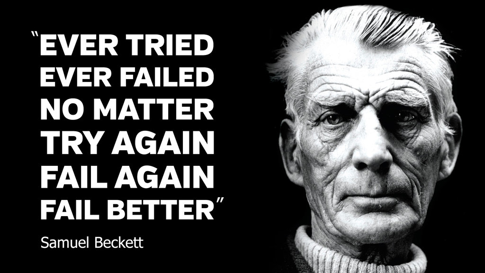

More information
Figure title
Definition /ˌdefəˈniSH(ə)n/ noun (lat. definitionem) 1. a statement of the exact meaning of a word, especially in a dictionary. 2. the degree of distinctness in outline of an object, image, or sound, especially of an image in a photograph or on a screen.
When you're neck-deep in shit, there's nothing left to do but sing.
Figure title
const Y = (f) => ((g) => (n) => f(g(g))(n))(
(g) => (n) => f(g(g))(n));
Y((facto) => (n) => (!n) ? 1 : n * facto(n-1))(5); //=> 120
Y((len) => (arr) => (!arr[0]) ? 0 : 1 + len(arr.slice(1)))([1,2,3,4,5]); //=> 5
Y((sum) => (arr) => (!arr.length) ? 0 : arr[0] + sum(arr.slice(1)))([1,2,3,4,5]); //=> 15
Figure title
| a | b | c |
|---|---|---|
| 1 | 2 | 3 |
| 1 | 2 | 3 |
This slide intentionally left blank.
Figure title
Figure title
